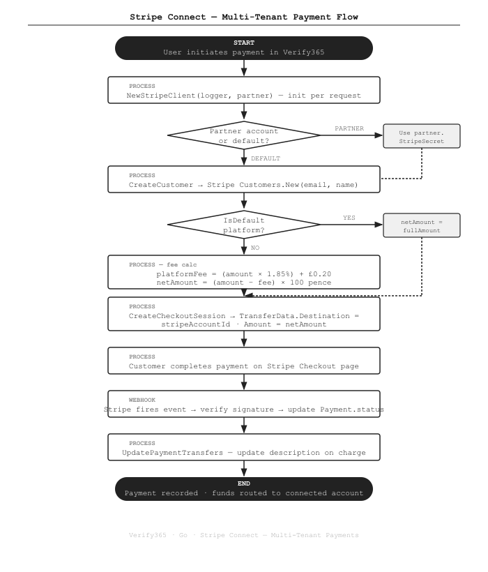

Multi-Tenant Stripe Connect Payments in a Go SaaS Platform
How Verify365 routes payments to different law firm Stripe accounts — with per-request client initialisation, dynamic fee calculation, and dual webhook endpoints.
The Problem
Verify365 is a white-label SaaS platform used by multiple law firms under different brands. Each partner firm needs to receive payments directly into their own Stripe account — not a shared platform account. At the same time, the platform needs to collect a processing fee before routing funds to the partner. We solved this with Stripe Connect and a per-partner client pattern in Go.
What We Built
A stripe365 package that wraps Stripe's Go SDK.
The core design: one Client365 instance per request, initialised with the correct partner credentials or falling back to the platform default.
Fee calculation and transfer routing are handled differently depending on which account is active.
How It Works

The Code
Per-request client initialisation
The client is initialised fresh for each payment request. If the partner has their own Stripe credentials, those are used; otherwise we fall back to the platform's env vars:
// thirdparty/stripe365/Stripe365.go
func NewStripeClient(logger *zerolog.Logger, partner *domain.Partner) Client365 {
stripeKey := ""
stripeSecret := ""
stripeWebhook := ""
stripeWebhookConnect := ""
isDefault := false
if partner == nil || partner.StripeSecret == "" {
// Platform default — env vars
stripeKey = os.Getenv("STRIPE_KEY")
stripeSecret = os.Getenv("STRIPE_SECRET")
stripeWebhook = os.Getenv("STRIPE_WEBHOOK")
stripeWebhookConnect = os.Getenv("STRIPE_WEBHOOK_CONNECT")
isDefault = true
} else {
// Partner-specific Stripe account
stripeKey = partner.StripeKey
stripeSecret = partner.StripeSecret
stripeWebhook = partner.StripeWebhook
stripeWebhookConnect = partner.StripeWebhookConnect
}
stripeClient := &client.API{}
stripeClient.Init(stripeSecret, nil)
return &client365{
StripeClient: stripeClient,
IsDefault: isDefault,
StripeWebhook: stripeWebhook,
StripeWebhookConnect: stripeWebhookConnect,
// ...
}
}Dynamic fee calculation and transfer routing
For partner accounts, a platform fee is deducted before routing the net amount. For the default platform account, the full amount is transferred (Stripe's fee is absorbed by the platform):
// Fee constants (UK pricing basis)
const (
StripeFeePercentage = 0.0185 // 1.85% — to be confirmed with client
StripeFeeFixed = 0.20 // £0.20 fixed per transaction
)
func (c *client365) CreateCheckoutSession(...) (*stripe.CheckoutSession, error) {
amount := payment.Amount * 100 // convert pounds → pence
roundedResult := math.Round(amount)
netAmount := roundedResult
platformFee := 0.0
if !c.IsDefault {
// Partner account: deduct platform fee before routing
platformFee = (payment.Amount * StripeFeePercentage) + StripeFeeFixed
netAmount = math.Round((payment.Amount - platformFee) * 100)
}
// IsDefault: netAmount = full amount (platform covers Stripe fees)
params := &stripe.CheckoutSessionParams{
// ...line items, mode, URLs...
PaymentIntentData: &stripe.CheckoutSessionPaymentIntentDataParams{
StatementDescriptor: stripe.String(fmt.Sprintf("V365 %s", payment.DisplayId)),
Description: stripe.String(description),
TransferData: &stripe.CheckoutSessionPaymentIntentDataTransferDataParams{
Amount: stripe.Int64(int64(netAmount)),
Destination: stripe.String(stripeAccountId), // the connected account ID
},
},
}
return c.StripeClient.CheckoutSessions.New(params)
}Onboarding a new partner's connected account
When a new partner firm onboards, we create an Express account and generate an onboarding link:
func (c *client365) CreateAccount(request domain.StripeAccountInfo, user domain.User) (*stripe.Account, error) {
params := &stripe.AccountParams{
Capabilities: &stripe.AccountCapabilitiesParams{
CardPayments: &stripe.AccountCapabilitiesCardPaymentsParams{Requested: stripe.Bool(true)},
Transfers: &stripe.AccountCapabilitiesTransfersParams{Requested: stripe.Bool(true)},
},
Country: stripe.String(request.Country),
Email: stripe.String(user.Email),
Type: stripe.String(string(stripe.AccountTypeExpress)), // Express onboarding
Settings: &stripe.AccountSettingsParams{
Payouts: &stripe.AccountSettingsPayoutsParams{
Schedule: &stripe.PayoutScheduleParams{
Interval: stripe.String(string(stripe.PayoutIntervalDaily)),
},
},
},
}
return c.StripeClient.Account.New(params)
}
func (c *client365) CreateAccountLink(id string, request domain.StripeAccountInfo) (*stripe.AccountLink, error) {
params := &stripe.AccountLinkParams{
Account: stripe.String(id),
RefreshURL: stripe.String(request.RefreshURL),
ReturnURL: stripe.String(request.ReturnURL),
Type: stripe.String("account_onboarding"),
}
return c.StripeClient.AccountLinks.New(params)
}Dual webhook endpoints
We run two separate Stripe webhook endpoints: one for platform-level events and one for connected account events. Each uses its own webhook secret for signature verification:
// Webhook routing — both registered in Gin router
router.POST("/webhook/stripe", paymentController.HandleStripeWebhook)
router.POST("/webhook/stripe/connect", paymentController.HandleStripeConnectWebhook)
// In PaymentService:
func (s *PaymentService) HandleWebhook(payload []byte, signature string, isConnect bool) error {
webhookSecret := s.stripeClient.GetStripeWebhook()
if isConnect {
webhookSecret = s.stripeClient.GetStripeWebhookConnect()
}
event, err := webhook.ConstructEvent(payload, signature, webhookSecret)
if err != nil {
return fmt.Errorf("stripe webhook signature verification failed: %w", err)
}
switch event.Type {
case "checkout.session.completed":
// Update Payment.status → "paid"
case "payment_intent.payment_failed":
// Update Payment.status → "failed"
case "transfer.created":
// Reconcile connected account transfer
}
return nil
}Key Points
- One client per request, not one client per app. Because each partner has different Stripe credentials, we instantiate the client inside the service call — not at startup. This makes the logic stateless and avoids credential leakage between requests.
- Fee logic only on partner accounts. The
IsDefaultflag controls whether the fee formula runs. On the default platform account, the full amount transfers and the platform absorbs Stripe's fee — a deliberate accounting decision. - Express accounts for partner onboarding. Stripe Express gives partners a simplified onboarding UI without building a full KYC flow ourselves. Daily payouts keep cash flow clean for law firms.
- Two webhook secrets.
STRIPE_WEBHOOKverifies platform events;STRIPE_WEBHOOK_CONNECTverifies connected account events. Using the wrong secret returns a verification failure — this is a common source of silent bugs. - Pence precision. All amounts are converted to integer pence before passing to Stripe.
math.Round()prevents floating-point drift from producing amounts like £10.000000001.
Stack
Implementing multi-tenant payments in your Go SaaS? Get in touch →